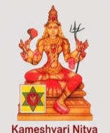
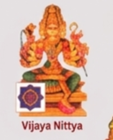
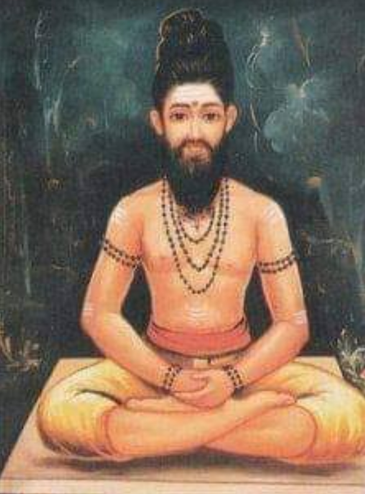
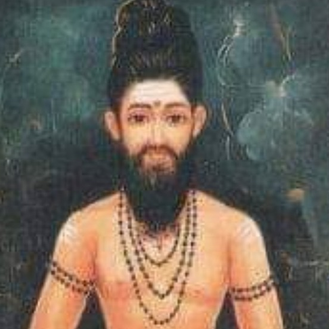

Folder nityas-opt/new-cropped/*.png (16) vs old nityas/*.png 719×960 + verse thirumoolar_big.jpg / tirumoolar_small.jpg · local preview only — not yet in public/
1 · Verification — are all 16 present?
✔ Yes — 16/16 PNGs present. Total 843 KB (avg 52.7 KB). Filenames normalized below to corpus keys.
right edge clipped (arm truncated) — needs re-export 4px wider
13
sarvamangala
sarvamangala.png
146×188 58KB
clean
14
jvalamalini
jwalamalini.png
141×188 51KB
spelling jwala ≠ corpus jvala
15
chitra
chitra.png
122×164 33KB
“Vichitra” caption — okay
16
maha_tripura_sundari
mahatripurasundari.png
184×210 83KB
largest — throne back extends; best of set
⚠ Three naming mismatches to fix at ship: berunda→bherunda, tvarite→tvarita, jwalamalini→jvalamalini. One geometry fix: vijaya.png right-edge clip. All 16 have English caption at bottom (“Kameshwari Nitya”) + small yantra inset — at chip 22px these become illegible noise (see §3).
Dimensions are small (103–184w) because these are crops from scanned prints, not renders. Old nityas/*.png were 719×960 but carried white-plate text too. These new crops are 4–8× smaller file size, but also 4× smaller pixel count. For reference old WebP-128 after ffmpeg was 6–8 KB each at 128px native (vs PNG 34–83 KB at 150px avg — PNGs are not yet optimized).
2 · Grid — new crops at display sizes 80 px
new-cropped PNG · 103–184 px native
Slider shows what the *CSS box* looks like. Native pixels are 103–184w — above ~120 CSS the PNGs are upscaled and will soften (no 2× retina headroom). Compare to old high-res set in §4 which had 256/512 headroom.
3 · Calendar integrations — using new-cropped PNGs (actual placements)
At 22px circular chip the bottom caption is ~3px tall — unreadable, just noise. Yantra inset becomes a 5px blur. Recommendation: for chips use icon-only crop or no image (name-only). Current live (nitya.mjs:8) is text-only — recommended to stay text-only for month cell.
C · 7-day Pulse — tiny badge (18 px) — NOT RECOMMENDED for portrait
TomorrowPradosham

Kāmeśvarī
18px = 18 physical pixels inside a border — face is ~8px. No devotional value; stays as text chip.
B · Today — Nitya Sadhana hero (mock, current card 96px)
Today — Kāmeśvarī
Manadā kalā · bīja अं · Kṛṣṇa Pratipad
Aiṃ Hrīṃ Śrīṃ Aṃ Aiṃ Sa Ka La Hrīṃ — vidyā preview
★ Best use of new crops. 96px hero fills the Nitya card nicely. At 96 CSS the native 157×189 is downscaled — crisp enough. Background #F4EFE6 blends with page.
D · Detail / expanded table row (tap day → shows mantra) — 150 px
Aiṃ Hrīṃ Śrīṃ Aṃ Aiṃ Sa Ka La Hrīṃ Nityaklinne Madadrave Sauḥ Aṃ Kāmeśvarī Nityā Śrī Pādukāṃ Pūjayāmi Tarpayāmi Namaḥ
ⓘ Śrī Vidyā Nitya vidyās are traditionally dīkṣā-bound; display is public-domain transcription — chant only as your guru instructs.
At 150 CSS the 157×189 source is 1:1 — edge of headroom. Faces stay legible; caption text is still small but sits below yantra. This is the largest we should display these files without blur (next slider up will soften visibly).
4 · Old vs new — same 96px hero box
Old nityas/kameshwari.png 719×960 PNG (1.1 MB) scaled 96px — high-res but has large white plate underneath (wasted pixels). Needs crop to be icon-friendly.New new-cropped/kameshwari.png 157×189 PNG (54 KB) at 96px — tight crop, yantra + caption still inline. 20× smaller file, nearly same visual at this box.

New vijaya.png 128×158 — clipped right edge visible at 96px (arm cut). Re-export wider.
★ Tradeoff: old set has resolution headroom (can go to 256 CSS retina crisp), new set is already optimized size but cannot go retina 2× beyond ~120 CSS without softening. For hero 96 + detail 150, new set is just enough; for a modal 200+ we'd need rescans or AI upscale.
5 · Tirumoolar — two images you supplied
File
Pixels
KB
Shape
Content
thirumoolar_big.jpg
894×1207
410 KB JPEG
portrait 0.74
Full seated yogi, dark aura background, yellow dhoti, rudraksha — contemplative
tirumoolar_small.jpg
552×552
52 KB JPEG
square 1.0
Face/chest crop (nose to jata), tight — ready for circle/rounded chip

Big — 894×1207 portrait full body · heavy (410 KB), detailed, needs compression

Small — 552×552 square face crop · 52 KB · readySmall at 96px circle (hero-style)Small at 28px circle (chip — still legible)
Verse of the Day — two layout mocks
Mock A — Hero side image (current verse card + left image). Uses small square 552 as 96px portrait inside verse card.
Tantra 1 · Verse 1
அஞ்சும் அடக்கு அடக்கு என்பர் அறிவிலர்...
añcum aṭakku aṭakku eṉpar aṟivilar …
Those without wisdom say "control the five senses" — control lies in knowing the Self. — Tirumandiram
Image right beside text — keeps verse readable; at 96px the face is devotional, not dominating.
Mock B — Banner top (big image as wide banner) — uses big portrait cropped to 16:7 (face stays centered). More ornamental, but competes with verse.
Tantra 3 · Verse 142
யோகத்தின் அங்கம் இவை...
The limbs of yoga are …
Banner crop loses legs and background but keeps beard + jata. At 120px tall it feels heavy; recommend Mock A (96 square side) as daily default and reserve big image for an expanded/“About Tirumoolar” affordance only.
Recommendation: ship tirumoolar_small.jpg → tirumoolar-256.webp ~15–20 KB as default hero accent (96px, lazy-loaded). Keep thirumoolar_big.jpg as optional detail (convert to 512w ~60 KB) linked via ⓘ or left out entirely to keep the verse card light. No image inside month/ICS — verse is daily only.
6 · What to ship — concise recommendation
You said you cannot find more images — so we ship these 16 as-is with minimal fixes. Coverage is 16/16, so no missing Devi. Quality is “good enough for hero 96–150”, not for retina 2× or large modal.
Placement
File to ship
Display
Why
Month Tithi cell
none (text only · Kāmeśvarī — current)
—
Chip too small; caption becomes noise. Keep text-only.
15–25 KB each (PNG 34–83 → WebP saves ~60%). Crisp at 96, ok at 150 detail via upscale 0.8×.
Expanded row (tap day)
same file lazy-loaded
140–150px
Native ~150 avg → no new file needed; lazy to avoid 16× upfront.
Verse of Day
tirumoolar_small 256w WebP
96px square/circle
Face crop already square; 15–20 KB.
Verse optional
thirumoolar_big 512w WebP on demand
banner/modal
410 KB JPEG → 60–80 KB WebP; only if user taps ⓘ about Tirumoolar.
Build step: ffmpeg -i %in.png -vf scale=192:192:force_original_aspect_ratio=decrease,pad=192:192:(ow-iw)/2:(oh-ih)/2:color=#F4EFE6 -c:v libwebp -quality 80 -compression_level 6 %out.webp — pads to square #F4EFE6 (page bg) so object-fit not needed; keeps aspect; then wire keys via rules/nitya_devis.jsonicon: \"nityas-opt/new-cropped/{key}.webp\" and render lazily. Or skip pad and use object-fit:cover on portrait — uses native crop tighter but circle will clip top of crown (current crops already have crown breathing room, so cover is ok).
Exact mapping to wire (fix spellings at emit): berunda→bherunda, tvarite→tvarita, jwalamalini→jvalamalini, chitra file “Vichitra” is correct, nityaklinne→nityaklinna (corpus nityaklinna).
Payload estimate: 16× ~18 KB = ~288 KB if all heroes shipped upfront; lazy single-hero (today's only) is ~18 KB per day — preferred. Month table stays 0 KB extra.
Adjust slider §2 to see hero 96 vs detail 150. Check §3 for the three real card shapes. If 96 feels too small/large for devotional tone, note the CSS px and I'll wire that exact value into app.js + index.html before shipping to public/.